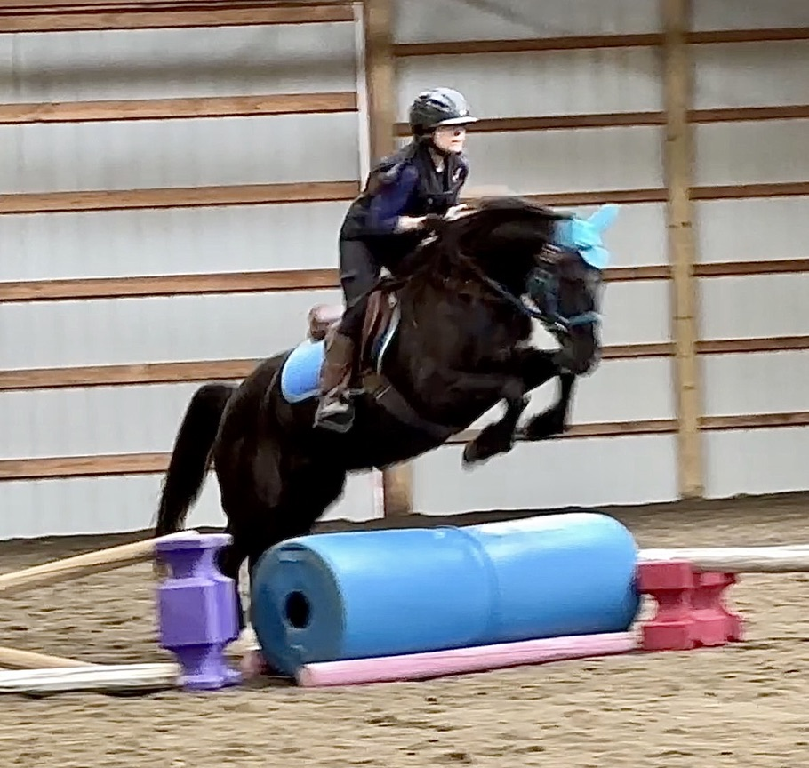

⭐ THE RESULTS ARE IN ⭐
GRYFFIN
Two-Time Champion. Barrel Jumping Extraordinaire.

First I did not dump my mom when a pheasant jumped out of a wormhole in the hay field. And THEN — as if that was not enough — I jumped the barrels. So fancy. Each one. In a row. With my tiny perfect legs. Judges were speechless. Cameras could barely contain it. Some say the barrels have never recovered. That is why I am Pony of the Month for June 2026. Again. You are welcome.
🌟 NOMINATE A PONY
Think your pony deserves the crown? Tell us why.
All nominations considered. Editorial discretion applies.